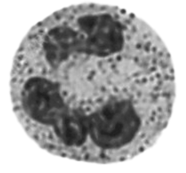
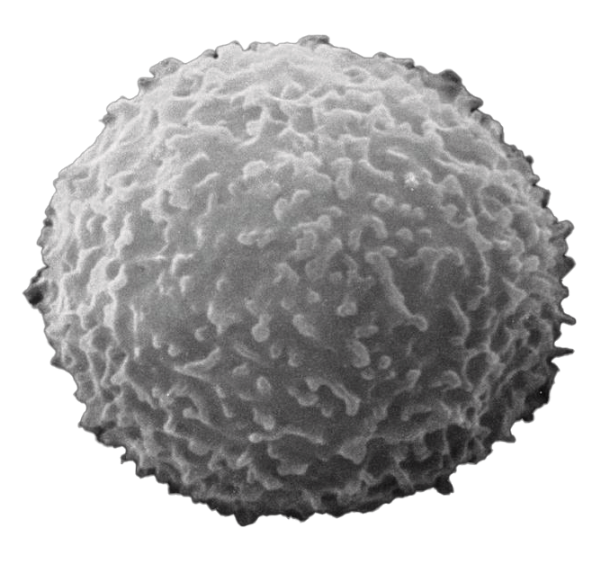
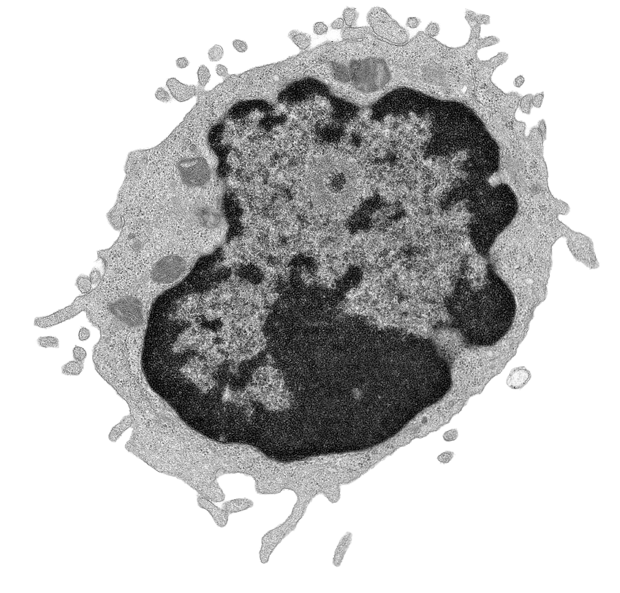

눈으로는 절대 잴 수 없는 세포의 크기, 광학 현미경 속 두 개의 눈금자로 재어 봅니다. 검정 눈금(대물마이크로미터)과 초록 눈금(접안마이크로미터)이 겹치는 순간을 직접 조작하며 원리를 확인해요.
광학 현미경을 이용하여 세포의 크기를 측정할 수 있다.
대물마이크로미터(검정)는 실제 눈금 간격이 10 μm로 고정되어 있지만, 배율이 높아질수록 현미경 속 상이 더 크게 확대되어 보여요. 반면 접안마이크로미터(초록)는 접안렌즈 안에 고정되어 있어 눈에 보이는 간격이 배율에 상관없이 항상 같아요. 배율 슬라이더를 움직여 두 눈금이 겹치는 지점을 확인해 보세요.
기본값은 시뮬레이터에서 두 눈금이 겹치는 지점을 자동으로 세어 채워 둔 값이에요. 직접 숫자를 바꿔가며 공식이 어떻게 계산되는지 확인해 보세요.
접안마이크로미터 눈금 위에 놓인 해캄 세포를 슬라이더로 늘려 보면서, 세포가 몇 칸을 차지하는지 세어 보세요. 측정한 눈금 칸 수 × 접안눈금 한 칸의 길이를 곱하면 세포의 실제 크기(μm)를 구할 수 있어요.
슬라이더를 움직이면 두 칸 수 입력란이 자동으로 맞춰져요. 값을 직접 수정해서 다른 경우도 계산해 볼 수 있어요.
앞선 탐구에서 확인한 원리를 바탕으로 다음 질문에 답해 보세요.
광학현미경은 빛을, 전자현미경은 전자빔을 이용해 시료를 관찰합니다. 사용하는 매체가 다르기 때문에 해상력(구분할 수 있는 최소 거리)과 관찰할 수 있는 정보도 달라집니다. 같은 백혈구를 세 가지 현미경으로 각각 찍은 사진을 비교해보세요.

가시광선을 이용해 관찰하며, 염색약으로 세포와 핵을 물들여 광학현미경으로도 핵과 세포질을 구별할 수 있게 합니다. 살아있는 시료도 관찰할 수 있다는 장점이 있습니다.

시료 표면을 전자빔으로 훑으며 튕겨 나오는 전자를 검출해 입체감 있는 흑백 이미지를 얻습니다. 백혈구 표면의 미세한 돌기와 주름까지 관찰할 수 있습니다.

얇게 자른 시료를 전자빔이 투과하며 내부 구조를 보여줍니다. 핵 속 응축된 염색질, 세포소기관의 분포 등 세포 내부의 미세 구조를 관찰할 수 있습니다.
| 비교 항목 | 광학현미경 | 주사전자현미경(SEM) | 투과전자현미경(TEM) |
|---|---|---|---|
| 이용하는 매체 | 가시광선 | 전자빔 (표면 반사) | 전자빔 (시료 투과) |
| 해상력 | 약 200 nm | 약 1~10 nm | 약 0.1~1 nm |
| 시료 준비 | 비교적 간단, 염색 가능 | 건조·금속 코팅 필요 | 매우 얇게 절편, 중금속 염색 |
| 살아있는 시료 관찰 | 가능 | 불가능 | 불가능 |
| 얻을 수 있는 정보 | 색이 있는 전체 형태 | 표면의 입체 구조 | 내부의 미세 구조 |